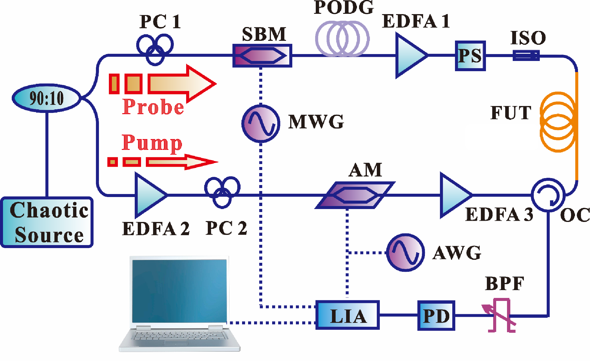
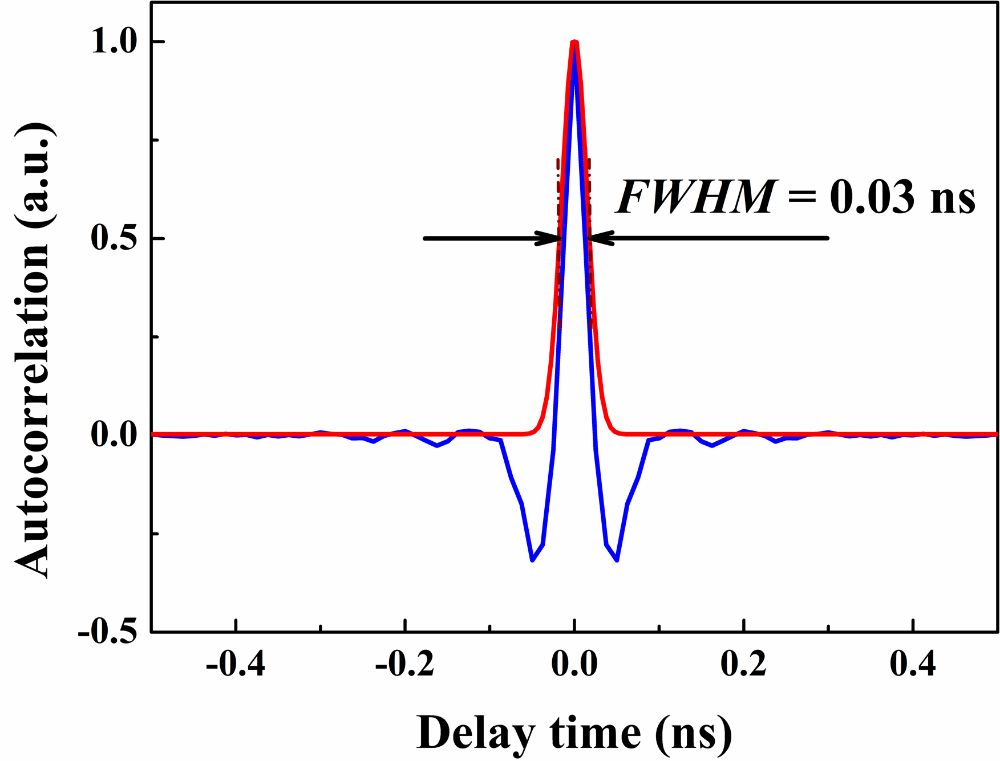

研究内容
混沌布里渊光相干域分析技术（Chaos-based BOCDA）将类噪声、宽频带、宽光谱的混沌激光作为探测信号从光纤两端分别入射，在厘米级（甚至毫米级）尺度的相关峰内产生受激布里渊散射，通过传感光纤沿线的布里渊频移变化感知光纤沿线的温度和应变信息，实现长监测距离、高空间分辨率的分布式光纤温度、应变、振动监测。
典型实验装置

技术优势分析
混沌激光类噪声特性克服了传统方案中监测距离与空间分辨率难以兼顾的技术瓶颈；
混沌激光宽频带特性将系统空间分辨率突破至毫米量级，空间采样密度大幅提升；
混沌激光宽光谱特性使混沌布里渊增益谱自然展宽，动态参量监测范围显著扩大.
典型实验结果
时序无规则振荡、高斯型振幅密度 |
功率谱宽带连续，带宽达到数GHz |
光谱呈高斯型宽带连续分布 |
|  | ||
唯一的、窄带的相关峰（声波场） |
理论空间分辨率为相关峰半高全宽 |
布里渊增益谱谱宽决定于光谱线宽 |
 |
||
传感距离大幅拓展可达 10.2km |
空间分辨率最高突破至3.5mm |
动态应变范围提升至1200με |